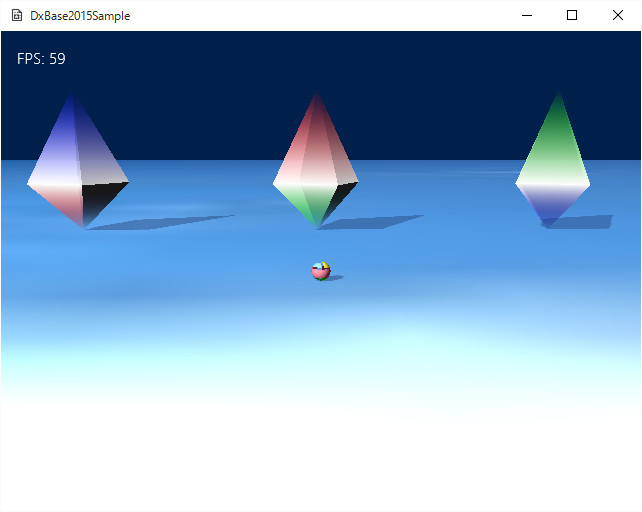

図4006a
画面を見るとわかる通り、3つのオブジェクト（正8面体）が配置されています。半分より上の部分が伸び縮みします。オブジェクトの上下に近い部分は若干透けています。プレイヤーをオブジェクトの奥に移動させて、透かして見ることもできます。
void CustomDrawOctahedron::CreateCustomMesh(){
vector<VertexPositionNormalTexture> vertices;
vector<uint16_t> indices;
//正8面体の作成
VertexUtil::CreateOctahedron(1.0f, vertices, indices);
m_BackupVirtex.clear();
for (auto V : vertices){
Color4 Col;
if (V.position.y > 0){
switch (m_Pattern){
case 0:
Col = Color4(1.0f, 0.0f, 0.0f, 0.0f);
break;
case 1:
Col = Color4(0.0f, 1.0f, 0.0f, 0.0f);
break;
case 2:
Col = Color4(0.0f, 0.0f, 1.0f, 0.0f);
break;
default:
Col = Color4(1.0f, 1.0f, 1.0f, 1.0f);
break;
}
}
else if (V.position.y < 0){
switch (m_Pattern){
case 0:
Col = Color4(0.0f, 1.0f, 0.0f, 0.0f);
break;
case 1:
Col = Color4(0.0f, 0.0f, 1.0f, 0.0f);
break;
case 2:
Col = Color4(1.0f, 0.0f, 0.0f, 0.0f);
break;
default:
Col = Color4(1.0f, 1.0f, 1.0f, 1.0f);
break;
}
}
else{
Col = Color4(1.0f, 1.0f, 1.0f, 1.0f);
}
m_BackupVirtex.push_back(
VertexPositionNormalColor(V.position, V.normal, Col)
);
}
//ミューテックス
std::mutex Mutex;
//デバイスの取得
auto Dev = App::GetApp()->GetDeviceResources();
ID3D11Device* pDx11Device = Dev->GetD3DDevice();
//バッファの作成
Util::DemandCreate(m_VertexBuffer, Mutex, [&](ID3D11Buffer** pResult)
{
//頂点バッファの作成(頂点変更可能)
VertexUtil::CreateDynamicPrimitiveVertexBuffer(pDx11Device, m_BackupVirtex, pResult);
});
//頂点数の設定
m_NumVertices = static_cast<UINT>(vertices.size());
Util::DemandCreate(m_IndexBuffer, Mutex, [&](ID3D11Buffer** pResult)
{
//インデックスバッファの作成
VertexUtil::CreatePrimitiveBuffer(pDx11Device, indices, D3D11_BIND_INDEX_BUFFER, pResult);
});
//インデックス数の設定
m_NumIndicis = static_cast<UINT>(indices.size());
}
//正8面体の作成
VertexUtil::CreateOctahedron(1.0f, vertices, indices);
Util::DemandCreate(m_VertexBuffer, Mutex, [&](ID3D11Buffer** pResult)
{
//頂点バッファの作成(頂点変更可能)
VertexUtil::CreateDynamicPrimitiveVertexBuffer(pDx11Device, m_BackupVirtex, pResult);
});
//カスタム描画コンスタントバッファ構造体
struct CustomDrawConstantBuffer
{
Matrix4X4 World;
Matrix4X4 View;
Matrix4X4 Projection;
Vector4 LightDir;
Vector4 Param; //汎用パラメータ
CustomDrawConstantBuffer() {
memset(this, 0, sizeof(CustomDrawConstantBuffer));
};
};
//--------------------------------------------------------------------------------------
// class CBCustomDraw : public ConstantBuffer<CBCustomDraw,CustomDrawConstantBuffer>;
// 用途: カスタムコンスタントバッファ
//--------------------------------------------------------------------------------------
class CBCustomDraw : public ConstantBuffer<CBCustomDraw, CustomDrawConstantBuffer>{
};
//--------------------------------------------------------------------------------------
// class VSCustomDraw : public VertexShader<VSCustomDraw, VertexPositionNormalColor>;
// 用途: VSCustomDraw頂点シェーダ
//--------------------------------------------------------------------------------------
class VSCustomDraw : public VertexShader<VSCustomDraw, VertexPositionNormalColor>{
public:
//構築
VSCustomDraw();
};
//--------------------------------------------------------------------------------------
// class PSCustomDraw : public PixelShader<PSCustomDraw>;
// 用途: PSCustomDrawピクセルシェーダ
//--------------------------------------------------------------------------------------
class PSCustomDraw : public PixelShader<PSCustomDraw>{
public:
//構築
PSCustomDraw();
};
//--------------------------------------------------------------------------------------
// class CBCustomDraw : public ConstantBuffer<CBCustomDraw,CustomDrawConstantBuffer>;
// 用途: カスタムコンスタントバッファ
//--------------------------------------------------------------------------------------
//シングルトン処理
unique_ptr<CBCustomDraw, CBCustomDraw::Deleter> CBCustomDraw::m_Ptr;
//--------------------------------------------------------------------------------------
// class VSCustomDraw : public VertexShader<VSCustomDraw, VertexPositionNormalColor>;
// 用途: VSCustomDraw頂点シェーダ
//--------------------------------------------------------------------------------------
//シングルトン処理
unique_ptr<VSCustomDraw, VSCustomDraw::Deleter> VSCustomDraw::m_Ptr;
//構築
VSCustomDraw::VSCustomDraw() :
VertexShader(App::GetApp()->m_wstrRelativeShadersPath + L"VSSimpleBase.cso")
{}
//--------------------------------------------------------------------------------------
// class PSCustomDraw : public PixelShader<PSCustomDraw>;
// 用途: PSCustomDrawピクセルシェーダ
//--------------------------------------------------------------------------------------
unique_ptr<PSCustomDraw, PSCustomDraw::Deleter> PSCustomDraw::m_Ptr;
//構築
PSCustomDraw::PSCustomDraw() :
PixelShader(App::GetApp()->m_wstrRelativeShadersPath + L"PSSimpleBase.cso")
{}
void CustomDrawOctahedron::Draw(){
//中略
//コンスタントバッファの設定
CustomDrawConstantBuffer cb1;
//行列の設定(転置する)
cb1.World = Matrix4X4EX::Transpose(PtrT->GetWorldMatrix());;
cb1.View = Matrix4X4EX::Transpose(View);
cb1.Projection = Matrix4X4EX::Transpose(Proj);
//ライトの設定
//ステージから0番目のライトを取り出す
auto PtrLight = GetStage()->GetTargetLight(0);
cb1.LightDir = PtrLight->GetDirectional();
cb1.LightDir.w = 1.0f;
//コンスタントバッファの更新
pID3D11DeviceContext->UpdateSubresource(
CBCustomDraw::GetPtr()->GetBuffer(), 0, nullptr, &cb1, 0, 0);
//ストライドとオフセット
UINT stride = sizeof(VertexPositionNormalColor);
UINT offset = 0;
//頂点バッファの設定
pID3D11DeviceContext->IASetVertexBuffers(0, 1, m_VertexBuffer.GetAddressOf(), &stride, &offset);
//インデックスバッファのセット
pID3D11DeviceContext->IASetIndexBuffer(m_IndexBuffer.Get(), DXGI_FORMAT_R16_UINT, 0);
//描画方法（3角形）
pID3D11DeviceContext->IASetPrimitiveTopology(D3D11_PRIMITIVE_TOPOLOGY_TRIANGLELIST);
//ステータスのポインタ
//テクスチャを取得
ID3D11ShaderResourceView* pNull[1] = { 0 };
ID3D11SamplerState* pNullSR[1] = { 0 };
//半透明処理
pID3D11DeviceContext->OMSetBlendState(RenderStatePtr->GetAlphaBlendEx(), nullptr, 0xffffffff);
//デプスステンシルは使用する
pID3D11DeviceContext->OMSetDepthStencilState(RenderStatePtr->GetDepthDefault(), 0);
//シェーダの設定
pID3D11DeviceContext->VSSetShader(VSCustomDraw::GetPtr()->GetShader(), nullptr, 0);
pID3D11DeviceContext->PSSetShader(PSCustomDraw::GetPtr()->GetShader(), nullptr, 0);
//インプットレイアウトの設定
pID3D11DeviceContext->IASetInputLayout(VSCustomDraw::GetPtr()->GetInputLayout());
//コンスタントバッファの設定
ID3D11Buffer* pConstantBuffer = CBCustomDraw::GetPtr()->GetBuffer();
pID3D11DeviceContext->VSSetConstantBuffers(0, 1, &pConstantBuffer);
pID3D11DeviceContext->PSSetConstantBuffers(0, 1, &pConstantBuffer);
//中略
}
class CustomShadowmap : public Shadowmap{
public:
explicit CustomShadowmap(const shared_ptr<GameObject>& GameObjectPtr);
virtual ~CustomShadowmap();
//操作
virtual void Draw();
};
void CustomShadowmap::Draw(){
//m_GameObjectがnullならDrawできない
if (IsGameObjectActive()){
auto PtrGameObject = GetGameObject();
auto PtrStage = PtrGameObject->GetStage();
if (!PtrStage){
return;
}
auto PtrT = PtrGameObject->GetComponent<Transform>();
//ステージから0番目のライトを取り出す
auto PtrLight = PtrStage->GetTargetLight(0);
//ステージからカメラを取り出す
auto PtrCamera = PtrStage->GetTargetCamera();
if (PtrT && PtrLight && PtrCamera){
Matrix4X4 RealWorldMatrix = GetMeshToTransform() * PtrT->GetWorldMatrix();
auto Dev = App::GetApp()->GetDeviceResources();
auto pID3D11DeviceContext = Dev->GetD3DDeviceContext();
//ステータスのポインタ
auto RenderStatePtr = PtrStage->GetRenderState();
//ライトの取得
Matrix4X4 LightView, LightProj;
Vector3 LightDir = -1.0 * PtrLight->GetDirectional();
Vector3 LightAt = PtrCamera->GetAt();
Vector3 LightEye = LightAt + (LightDir * GetLightHeight());
//ライトのビューと射影を計算
LightView.LookAtLH(LightEye, LightAt, Vector3(0, 1.0f, 0));
LightProj.OrthographicLH(
GetViewWidth(), GetViewHeight(), GetLightNear(), GetLightFar());
CustomShadowmapConstantBuffer Cb;
Cb.mWorld = Matrix4X4EX::Transpose(RealWorldMatrix);
Cb.mView = Matrix4X4EX::Transpose(LightView);
Cb.mProj = Matrix4X4EX::Transpose(LightProj);
//これより描画処理
//コンスタントバッファの更新
pID3D11DeviceContext->UpdateSubresource(
CBCustomShadowmap::GetPtr()->GetBuffer(), 0, nullptr, &Cb, 0, 0);
//インプットレイアウトのセット
pID3D11DeviceContext->IASetInputLayout(
VSCustomShadowmap::GetPtr()->GetInputLayout());
//ストライドとオフセット
UINT stride = sizeof(VertexPositionNormalColor);
UINT offset = 0;
auto GameObj = dynamic_pointer_cast<CustomDrawOctahedron>(GetGameObject());
//頂点バッファをセット
pID3D11DeviceContext->IASetVertexBuffers(
0, 1, GameObj->GetVertexBuffer().GetAddressOf(), &stride, &offset);
//頂点シェーダーのセット
pID3D11DeviceContext->VSSetShader(
VSCustomShadowmap::GetPtr()->GetShader(), nullptr, 0);
//インデックスバッファのセット
pID3D11DeviceContext->IASetIndexBuffer(
GameObj->GetIndexBuffer().Get(), DXGI_FORMAT_R16_UINT, 0);
//描画方法（3角形）
pID3D11DeviceContext->IASetPrimitiveTopology(D3D11_PRIMITIVE_TOPOLOGY_TRIANGLELIST);
//ピクセルシェーダはセットしない！
pID3D11DeviceContext->PSSetShader(nullptr, nullptr, 0);
//ジオメトリシェーダの設定（使用しない）
pID3D11DeviceContext->GSSetShader(nullptr, nullptr, 0);
//コンスタントバッファの設定
ID3D11Buffer* pConstantBuffer = CBCustomShadowmap::GetPtr()->GetBuffer();
pID3D11DeviceContext->VSSetConstantBuffers(0, 1, &pConstantBuffer);
ID3D11Buffer* pNullConstantBuffer = nullptr;
//コンスタントバッファをピクセルシェーダにセット
pID3D11DeviceContext->PSSetConstantBuffers(0, 1, &pNullConstantBuffer);
//描画
pID3D11DeviceContext->DrawIndexed(GameObj->GetNumIndicis(), 0, 0);
//後始末
Dev->InitializeStates(RenderStatePtr);
}
}
}